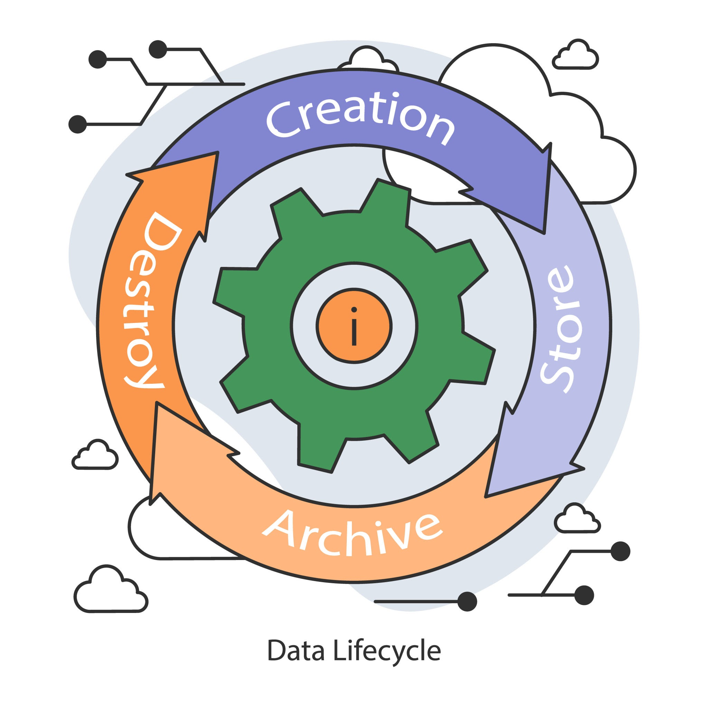
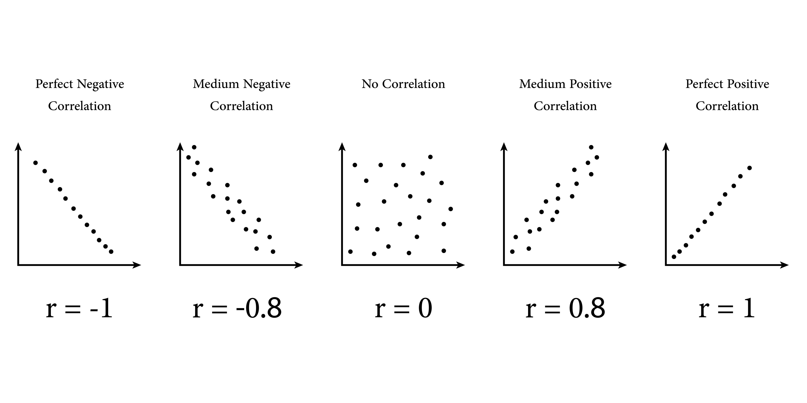

جلسه ۹: 📊 دیتا، تحلیل دیتا و الگوریتمهای بنیادین (Data Science & Analytics)
تحلیل عمیق ماهیت داده، چرخهی عمر (Lifecycle)، تمیزسازی، انواع داده و روشهای آماری بنیادین در هوش مصنوعی
این جلسه به قلب علوم هوش مصنوعی، یعنی داده (Data) میپردازد. ما چرخهی عمر داده (از تولید تا استفاده)، اصول تحلیل اکتشافی، روشهای آماری کلیدی و چگونگی آمادهسازی داده برای مدلهای پیچیده هوش مصنوعی را با جزئیات فنی بررسی خواهیم کرد.
۱. بخش اول: تعریف و ماهیت داده (Data) در عصر دیجیتال
داده، در سادهترین تعریف، مجموعهای از حقایق، ارقام، مشاهدهها یا اطلاعاتی است که در قالب رسمی ثبت شدهاند و میتوانند برای پردازش یا تحلیل به کار روند. در حوزه هوش مصنوعی، داده ماده اولیه و حیاتیترین دارایی است.
۱.۱. سلسله مراتب داده (Data Hierarchy)
داده را میتوان در سطوح مختلف سازماندهی کرد:
- بیت (Bit): کوچکترین واحد (۰ یا ۱).
- بایت (Byte): مجموعهای از بیتها (۸ بیت).
- فیلد (Field / Column): یک خصوصیت خاص (مانند سن).
- رکورد (Record / Row): مجموعهای از فیلدها که یک موجودیت را توصیف میکنند.
- فایل (File / Table): مجموعهای از رکوردها.
- پایگاه داده (Database): مجموعهای سازمانیافته از فایلها.
۱.۲. تمایز داده، اطلاعات، دانش و خرد
این مفاهیم اغلب در سلسله مراتب DIKW (Data-Information-Knowledge-Wisdom) قرار میگیرند:
-
داده (Data): حقایق خام و بیساختار (مثلاً:
13:30,25°C). - اطلاعات (Information): دادههای پردازششده و دارای زمینه (مثلاً: «ساعت ۱:۳۰ بعدازظهر، دمای حسگر ۲۵ درجه بوده است»).
- دانش (Knowledge): درک الگوها و زمینههای اطلاعات (مثلاً: «بر اساس این دما، سیستم تهویه باید روشن شود»).
- خرد (Wisdom): توانایی اعمال دانش در شرایط جدید (مثلاً: «اگر این الگو در طول یک ماه تکرار شود، احتمالاً نیاز به ارتقاء سیستم خنککننده داریم»).
۲. بخش دوم: چرخه عمر داده (Data Lifecycle)
دادهها مسیری را از لحظه تولید تا آرشیو یا حذف طی میکنند. درک این چرخه برای حکمرانی داده (Data Governance) و تضمین کیفیت حیاتی است.

۲.۱. مراحل اصلی چرخه عمر داده
- ۱. تولید (Creation / Acquisition)
-
دادهها از طریق حسگرها، فرمهای ورودی، لاگهای سیستمی، وباسکرپینگ یا APIها جمعآوری میشوند. در این مرحله، کیفیت و منبع داده (Source of Truth) تعیین میشود.
- ۲. ذخیرهسازی (Storage)
-
دادهها باید در پایگاههای داده (SQL, NoSQL)، دریاچههای داده (Data Lakes) یا انبارهای داده (Data Warehouses) ذخیره شوند. انتخاب ساختار ذخیرهسازی به حجم (Volume)، سرعت (Velocity) و تنوع (Variety) داده بستگی دارد.
- ۳. استفاده و تحلیل (Usage / Analysis)
-
دادهها برای مدلسازی، گزارشگیری و هوش تجاری (BI) استفاده میشوند. این مرحله شامل تحلیل توصیفی (Descriptive)، پیشبینانه (Predictive) و تجویزی (Prescriptive) است.
- ۴. آرشیو و حذف (Archive / Destruction)
-
پس از اتمام استفاده فعال، دادهها باید بر اساس قوانین حریم خصوصی (مانند GDPR) یا آرشیو شوند یا بهطور ایمن از بین بروند.
۳. بخش سوم: انواع داده در هوش مصنوعی (AI Data Types)
نحوه برخورد یک مدل هوش مصنوعی با داده، کاملاً به نوع آن داده بستگی دارد. ما دادهها را بر اساس ساختار و مقیاس اندازهگیری طبقهبندی میکنیم.
۳.۱. طبقهبندی بر اساس ساختار (Structure)
- دادههای ساختاریافته (Structured Data): دادههایی که بهطور کامل در قالب جدول (مانند فایلهای CSV یا جداول SQL) سازماندهی شدهاند. این دادهها سادهترین نوع برای تحلیل و مدلسازی هستند.
- دادههای نیمهساختاریافته (Semi-Structured Data): دادههایی که فاقد شمای سفت و سخت جدول هستند، اما ساختار سلسله مراتبی (Hierarchical) دارند (مانند فایلهای JSON یا XML).
- دادههای بدون ساختار (Unstructured Data): دادههای خام که ساختار داخلی ندارند و بخش عمده دادههای جهان (حدود ۸۰٪) را تشکیل میدهند (مانند متون، تصاویر، ویدیوها، فایلهای صوتی).
۳.۲. طبقهبندی بر اساس مقیاس اندازهگیری (Measurement Scales)
- دادههای کیفی/گسسته (Qualitative / Discrete)
-
- اسمی (Nominal): صرفاً برای نامگذاری و دستهبندی استفاده میشوند، بدون ترتیب معنایی (مانند: رنگ چشم، جنسیت).
- ترتیبی (Ordinal): دستهبندی دارند و ترتیب معنایی مهم است، اما فاصله بین مقادیر معنای مشخصی ندارد (مانند: رتبههای نظرسنجی - خوب، متوسط، بد).
- دادههای کمی/پیوسته (Quantitative / Continuous)
-
- فاصلهای (Interval): ترتیب و فواصل معنا دارند، اما نقطه صفر مطلق وجود ندارد (مانند: دما بر حسب سلسیوس).
- نسبی (Ratio): بالاترین سطح اندازهگیری. ترتیب، فواصل و نقطه صفر مطلق معنا دارند (مانند: سن، درآمد، ارتفاع).
۴. بخش چهارم: تمیزسازی داده (Data Cleaning) و کیفیت (Quality)
“Garbage In, Garbage Out” — اگر دادههای ورودی کیفیت لازم را نداشته باشند، پیشرفتهترین مدلهای هوش مصنوعی نیز نتایج معتبری ارائه نخواهند داد.
۴.۱. ابعاد کیفیت داده
- صحت (Accuracy): داده چقدر به واقعیت نزدیک است؟ (مثلاً: آیا سن ثبت شده درست است؟)
- کامل بودن (Completeness): آیا فیلدهای ضروری حاوی مقادیر هستند؟ (مثلاً: آیا همهٔ مشتریان آدرس دارند؟)
- سازگاری (Consistency): آیا مقادیر در سیستمهای مختلف با هم تضاد ندارند؟ (مثلاً: آیا تاریخ تولد با سن همخوانی دارد؟)
- بهموقع بودن (Timeliness): آیا دادهها به اندازه کافی جدید هستند؟ (مثلاً: استفاده از دادههای قدیمی بازار سهام).
۴.۲. مدیریت دادههای گمشده (Missing Data)
مقادیر گمشده (NaN یا Null) باید مدیریت شوند:
- حذف (Deletion)
-
اگر تعداد رکوردهای گمشده کم باشد، میتوان رکوردها یا ستونهای دارای مقادیر گمشده را حذف کرد. (مناسب زمانی که کمتر از ۵٪ دادهها گمشده باشد).
- تخصیص (Imputation)
-
جایگزینی مقادیر گمشده با یک تخمین. روشهای متداول شامل جایگزینی با میانگین (Mean)، میانه (Median) یا مد (Mode) برای دادههای عددی و استفاده از مدلهای پیشبینی (مانند KNN Imputer) برای تخمین مقادیر.
شبهکد تخصیص داده با میانگین در پایتون
# تخصیص داده گمشده در ستون 'Age' با استفاده از میانه
median_age = data['Age'].median()
data['Age'].fillna(median_age, inplace=True)
۵. بخش پنجم: تبدیل و نرمالسازی داده (Transformation & Normalization)
پس از تمیزسازی، دادهها باید برای مدلها آماده شوند. این فرآیند اغلب شامل مقیاسبندی و تبدیل دادههای کیفی به کمی است.
۵.۱. کدگذاری متغیرهای دستهای (Encoding Categorical Variables)
- کدگذاری یکداغ (One-Hot Encoding)
-
مناسب برای متغیرهای اسمی (Nominal). هر دسته به یک ستون دودویی (۰ یا ۱) تبدیل میشود. این کار باعث میشود مدل اشتباهاً ترتیبی را برای دستهها در نظر نگیرد.
- کدگذاری برچسبی (Label Encoding)
-
مناسب برای متغیرهای ترتیبی (Ordinal). دستهها به مقادیر عددی (۱، ۲، ۳، …) نگاشت میشوند. این کار ترتیب معنایی را حفظ میکند.
۵.۲. مقیاسبندی (Scaling) و نرمالسازی (Normalization)
بسیاری از الگوریتمهای هوش مصنوعی (مانند KNN یا شبکههای عصبی) که از فاصله اقلیدسی استفاده میکنند، به مقیاسبندی حساس هستند.
- نرمالسازی (Min-Max Normalization)
-
مقادیر را به بازهای کوچک (معمولاً \([0, 1]\)) نگاشت میکند. برای دادههایی که توزیع نرمال ندارند مناسب است.
\[ X_{norm} = \frac{X - X_{min}}{X_{max} - X_{min}} \] - استانداردسازی (Standardization / Z-Score Scaling)
-
مقادیر را به گونهای تبدیل میکند که میانگین \((\mu)\) صفر و انحراف معیار \((\sigma)\) یک شود. برای دادههایی که دارای توزیع نزدیک به نرمال هستند، ترجیح داده میشود.
\[ X_{std} = \frac{X - \mu}{\sigma} \]
۶. بخش ششم: تحلیل اکتشافی داده (Exploratory Data Analysis - EDA)
EDA فرآیند حیاتی درک ساختار و الگوهای داده قبل از مدلسازی است. هدف اصلی EDA، کشف ناهنجاریها، روابط پنهان و آمادهسازی زمینهی مدلسازی است.
۶.۱. آمار توصیفی (Descriptive Statistics)
- اندازهگیریهای مرکزی (Measures of Central Tendency)
-
- میانگین (Mean - \(\mu\)): مجموع مقادیر تقسیم بر تعداد (حساس به دادههای پرت).
- میانه (Median): مقدار میانی در یک مجموعه مرتبشده (مقاوم در برابر دادههای پرت).
- مد (Mode): مقداری که بیشترین تکرار را دارد.
- اندازهگیریهای پراکندگی (Measures of Dispersion)
-
- دامنه (Range): تفاضل بزرگترین و کوچکترین مقدار.
- واریانس (Variance - \(\sigma^2\)): میانگین مجذور اختلاف هر مقدار با میانگین.
- انحراف معیار (Standard Deviation - \(\sigma\)): ریشه دوم واریانس (معیار اصلی پراکندگی).
\[ \sigma = \sqrt{\frac{1}{N} \sum_{i=1}^{N} (X_i - \mu)^2} \]
۶.۲. تجسم داده (Data Visualization)
تصاویر میتوانند الگوها و ناهنجاریهایی را که با اعداد قابل مشاهده نیستند، آشکار کنند.
- نمودار جعبهای (Box Plot): برای شناسایی دادههای پرت (Outliers) و توزیع چارکها (Quartiles).
- هیستوگرام (Histogram): برای مشاهده شکل توزیع یک متغیر پیوسته.
- نمودار پراکندگی (Scatter Plot): برای مشاهده رابطه بین دو متغیر.
۷. بخش هفتم: دادههای پرت (Outliers) و مدیریت آنها
دادههای پرت، مقادیری هستند که به طور قابل ملاحظهای از سایر مقادیر موجود در مجموعه داده منحرف شدهاند و میتوانند بهطور جدی نتایج مدلهای هوش مصنوعی (بهویژه رگرسیون خطی) را تحت تأثیر قرار دهند.
۷.۱. روشهای شناسایی دادههای پرت
- روش IQR (Interquartile Range)
-
IQR فاصله بین چارک سوم (\(Q_3\)) و چارک اول (\(Q_1\)) است. دادههای پرت، مقادیری هستند که: \[ \text{Value} > Q_3 + 1.5 \times \text{IQR} \quad \text{OR} \quad \text{Value} < Q_1 - 1.5 \times \text{IQR} \] این روش در برابر توزیعهای غیرنرمال مقاوم است.
- روش انحراف معیار (Standard Deviation Method)
-
در توزیعهای نرمال، اغلب مقادیری که بیش از \(2\sigma\) یا \(3\sigma\) (دو یا سه انحراف معیار) از میانگین دور باشند، بهعنوان داده پرت در نظر گرفته میشوند.
۷.۲. مدیریت دادههای پرت
- حذف (Deletion): اگر مطمئن هستیم که داده پرت ناشی از خطای اندازهگیری است (درصد کم).
- حدگذاری (Capping / Winsorizing): جایگزینی مقادیر پرت با نزدیکترین مقدار غیر پرت (مثلاً، تمام مقادیر بالاتر از \(Q_3 + 1.5 \times \text{IQR}\) با همین مقدار جایگزین میشوند).
- تبدیل (Transformation): استفاده از تبدیلهای لگاریتمی برای کاهش تأثیر مقادیر بسیار بزرگ.
۸. بخش هشتم: ارتباط (Correlation) و همخطی (Collinearity)
درک چگونگی ارتباط متغیرها با یکدیگر برای انتخاب بهترین ویژگیها (Features) برای مدلسازی حیاتی است.
۸.۱. ضریب همبستگی پیرسون (Pearson Correlation Coefficient)
این ضریب (\(r\)) شدت و جهت رابطه خطی بین دو متغیر پیوسته (\(X\) و \(Y\)) را اندازهگیری میکند.
\[ r = \frac{\sum_{i=1}^{n} (X_i - \bar{X})(Y_i - \bar{Y})}{\sqrt{\sum_{i=1}^{n} (X_i - \bar{X})^2} \sqrt{\sum_{i=1}^{n} (Y_i - \bar{Y})^2}} \]
مقدار \(r\) بین \([-1, +1]\) است. \(r \approx +1\) به معنای رابطه خطی مثبت قوی، \(r \approx -1\) رابطه خطی منفی قوی، و \(r \approx 0\) به معنای عدم رابطه خطی است.

۸.۲. همخطی (Multicollinearity)
همخطی پدیدهای است که در آن، دو یا چند متغیر مستقل (Features) در یک مدل رگرسیون، با یکدیگر ارتباط خطی قوی دارند.
- مشکلات: همخطی میتواند تخمینهای مدل (ضرایب رگرسیون) را ناپایدار و غیرقابل تفسیر کند.
- تشخیص: استفاده از فاکتور تورم واریانس (Variance Inflation Factor - VIF). اگر \(VIF > 5\) یا \(VIF > 10\) باشد، همخطی جدی است. \[ VIF_i = \frac{1}{1 - R_i^2} \] (که در آن \(R_i^2\) ضریب تعیین در رگرسیون متغیر \(X_i\) بر سایر متغیرهای مستقل است.)
- راهحل: حذف یکی از متغیرهای مرتبط یا ادغام آنها.
۹. بخش نهم: نمونهگیری (Sampling) و توزیع داده
اغلب نمیتوانیم با کل جمعیت (Population) کار کنیم، بنابراین نیاز به انتخاب یک زیرمجموعه (Sample) داریم که نماینده کل جمعیت باشد.
۹.۱. اصول نمونهگیری
- نمونهگیری تصادفی ساده (Simple Random Sampling)
-
هر عضو جمعیت، شانس برابری برای انتخاب دارد. این روش بهترین راه برای به حداقل رساندن سوگیری (Bias) است.
- نمونهگیری طبقهای (Stratified Sampling)
-
جمعیت به زیرگروههای (Strata) همگن تقسیم میشود و سپس نمونهگیری تصادفی از هر زیرگروه به نسبت اندازه آن انجام میشود. (مثلاً: اطمینان از اینکه نسبت جنسیتی در نمونه حفظ شود).
۹.۲. قضیه حد مرکزی (Central Limit Theorem - CLT)
CLT یکی از بنیادینترین قضایای آمار است: اگر اندازهی نمونهها (\(\mathbf{n}\)) به اندازهی کافی بزرگ باشد (\(\mathbf{n \geq 30}\))، توزیع نمونهای میانگینها، مستقل از شکل توزیع جمعیت اصلی، تقریباً توزیع نرمال (Normal Distribution) خواهد داشت.
این قضیه پایه و اساس بسیاری از تستهای فرضیه (Hypothesis Testing) و فواصل اطمینان (Confidence Intervals) در تحلیل داده است.
\[ \text{Sample Mean Distribution} \sim \mathcal{N} \left( \mu, \frac{\sigma^2}{n} \right) \]
۱۰. بخش دهم: آمار استنباطی (Inferential Statistics) و تست فرضیه
آمار استنباطی به ما اجازه میدهد تا بر اساس اطلاعات نمونه، نتیجهگیریهایی در مورد کل جمعیت داشته باشیم.
۱۰.۱. تست فرضیه (Hypothesis Testing)
فرآیندی سیستماتیک برای تصمیمگیری در مورد یک پارامتر جمعیتی بر اساس شواهد نمونهای.
- فرضیه صفر (\(H_0\) - Null Hypothesis)
-
بیانیهای مبنی بر عدم وجود اثر یا عدم تفاوت (همیشه به دنبال رد آن هستیم). مثلاً: «میانگین درآمد دو گروه برابر است.»
- فرضیه جایگزین (\(H_a\) - Alternative Hypothesis)
-
بیانیهای مبنی بر وجود اثر یا تفاوت. مثلاً: «میانگین درآمد دو گروه برابر نیست.»
۱۰.۲. مقدار p-Value و سطح معناداری (\(\alpha\))
- سطح معناداری (\(\alpha\)): حداکثر ریسک مجاز برای رد نادرست \(H_0\) (خطای نوع اول). معمولاً \(\alpha = 0.05\) است.
- p-Value: احتمال مشاهده دادههای نمونهای (یا دادههای افراطیتر) در صورتی که \(H_0\) درست باشد.
- قاعده تصمیم: اگر \(p\text{-Value} < \alpha\) باشد، \(H_0\) را رد میکنیم و میپذیریم که تفاوت معنادار آماری (Statistically Significant) است.
۱۱. بخش یازدهم: رگرسیون خطی (Linear Regression) - اولین مدل تحلیلی
رگرسیون خطی یک الگوریتم پایه و قابل تفسیر برای مدلسازی رابطه خطی بین یک متغیر وابسته (هدف) و یک یا چند متغیر مستقل (پیشبین) است.
۱۱.۱. معادله رگرسیون خطی ساده
در سادهترین شکل، یک متغیر هدف (\(Y\)) را با یک متغیر پیشبین (\(X\)) مدل میکند:
\[ Y = \beta_0 + \beta_1 X + \epsilon \]
- \(\mathbf{Y}\): متغیر وابسته (هدف).
- \(\mathbf{X}\): متغیر مستقل (پیشبین).
- \(\mathbf{\beta_0}\): عرض از مبدأ (Intercept) - مقدار \(Y\) وقتی \(X=0\).
- \(\mathbf{\beta_1}\): شیب (Slope) - میزان تغییر \(Y\) به ازای هر واحد تغییر در \(X\).
- \(\mathbf{\epsilon}\): خطای مدل (Error Term).
۱۱.۲. روش کمترین مربعات معمولی (Ordinary Least Squares - OLS)
OLS روشی است که برای یافتن بهترین خط رگرسیون (یعنی تخمین ضرایب \(\beta_0\) و \(\beta_1\)) استفاده میشود. هدف OLS به حداقل رساندن مجموع مربعات خطاهای باقیمانده (Sum of Squared Residuals - SSR) است:
\[ \min \text{SSR} = \min \sum_{i=1}^{n} (Y_i - \hat{Y}_i)^2 = \min \sum_{i=1}^{n} (Y_i - (\beta_0 + \beta_1 X_i))^2 \]
۱۲. بخش دوازدهم: ارزیابی و مفروضات رگرسیون خطی
برای اینکه نتایج رگرسیون خطی معتبر باشند، باید مفروضات آماری خاصی برآورده شوند و باید عملکرد مدل را ارزیابی کنیم.
۱۲.۱. معیارهای ارزیابی (Goodness of Fit)
- ضریب تعیین (\(R^2\) - Coefficient of Determination): نشان میدهد که چه نسبتی از واریانس متغیر وابسته توسط متغیرهای مستقل توضیح داده میشود. \(R^2\) بین \([0, 1]\) است.
- خطای میانگین مربعات (Mean Squared Error - MSE): میانگین مجذور خطاها. واحد آن مجذور واحد هدف است.
- ریشه خطای میانگین مربعات (Root Mean Squared Error - RMSE): واحد آن مشابه واحد هدف است و پرکاربردترین معیار است. \[ \text{RMSE} = \sqrt{\frac{1}{n} \sum_{i=1}^{n} (Y_i - \hat{Y}_i)^2} \]
۱۲.۲. مفروضات اساسی OLS
نقض این مفروضات باعث میشود تخمینهای OLS بهینه نباشند:
- خطی بودن (Linearity): رابطه بین \(X\) و \(Y\) باید خطی باشد.
- استقلال خطاها (Independence of Errors): خطاها (باقیماندهها) باید از یکدیگر مستقل باشند. (نقض توسط سریهای زمانی).
- همگنی واریانس (Homoscedasticity): واریانس خطاها باید در تمام سطوح \(X\) ثابت باشد. (نقض توسط Heteroscedasticity).
- توزیع نرمال خطاها (Normality of Errors): توزیع باقیماندهها باید تقریباً نرمال باشد (به دلیل CLT).
۱۰. بخش دهم: آمار استنباطی (Inferential Statistics) و تست فرضیه
آمار استنباطی به ما اجازه میدهد تا بر اساس اطلاعات نمونه، نتیجهگیریهایی در مورد کل جمعیت داشته باشیم.
۱۰.۱. تست فرضیه (Hypothesis Testing)
فرآیندی سیستماتیک برای تصمیمگیری در مورد یک پارامتر جمعیتی بر اساس شواهد نمونهای.
- فرضیه صفر (\(H_0\) - Null Hypothesis)
-
بیانیهای مبنی بر عدم وجود اثر یا عدم تفاوت (همیشه به دنبال رد آن هستیم). مثلاً: «میانگین درآمد دو گروه برابر است.»
- فرضیه جایگزین (\(H_a\) - Alternative Hypothesis)
-
بیانیهای مبنی بر وجود اثر یا تفاوت. مثلاً: «میانگین درآمد دو گروه برابر نیست.»
۱۰.۲. مقدار p-Value و سطح معناداری (\(\alpha\))
- سطح معناداری (\(\alpha\)): حداکثر ریسک مجاز برای رد نادرست \(H_0\) (خطای نوع اول). معمولاً \(\alpha = 0.05\) است.
- p-Value: احتمال مشاهده دادههای نمونهای (یا دادههای افراطیتر) در صورتی که \(H_0\) درست باشد.
- قاعده تصمیم: اگر \(p\text{-Value} < \alpha\) باشد، \(H_0\) را رد میکنیم و میپذیریم که تفاوت معنادار آماری (Statistically Significant) است.
۱۱. بخش یازدهم: رگرسیون خطی (Linear Regression) - اولین مدل تحلیلی
رگرسیون خطی یک الگوریتم پایه و قابل تفسیر برای مدلسازی رابطه خطی بین یک متغیر وابسته (هدف) و یک یا چند متغیر مستقل (پیشبین) است.
۱۱.۱. معادله رگرسیون خطی ساده
در سادهترین شکل، یک متغیر هدف (\(Y\)) را با یک متغیر پیشبین (\(X\)) مدل میکند:
\[ Y = \beta_0 + \beta_1 X + \epsilon \]
- \(\mathbf{Y}\): متغیر وابسته (هدف).
- \(\mathbf{X}\): متغیر مستقل (پیشبین).
- \(\mathbf{\beta_0}\): عرض از مبدأ (Intercept) - مقدار \(Y\) وقتی \(X=0\).
- \(\mathbf{\beta_1}\): شیب (Slope) - میزان تغییر \(Y\) به ازای هر واحد تغییر در \(X\).
- \(\mathbf{\epsilon}\): خطای مدل (Error Term).
۱۱.۲. روش کمترین مربعات معمولی (Ordinary Least Squares - OLS)
OLS روشی است که برای یافتن بهترین خط رگرسیون (یعنی تخمین ضرایب \(\beta_0\) و \(\beta_1\)) استفاده میشود. هدف OLS به حداقل رساندن مجموع مربعات خطاهای باقیمانده (Sum of Squared Residuals - SSR) است:
\[ \min \text{SSR} = \min \sum_{i=1}^{n} (Y_i - \hat{Y}_i)^2 = \min \sum_{i=1}^{n} (Y_i - (\beta_0 + \beta_1 X_i))^2 \]
۱۲. بخش دوازدهم: ارزیابی و مفروضات رگرسیون خطی
برای اینکه نتایج رگرسیون خطی معتبر باشند، باید مفروضات آماری خاصی برآورده شوند و باید عملکرد مدل را ارزیابی کنیم.
۱۲.۱. معیارهای ارزیابی (Goodness of Fit)
- ضریب تعیین (\(R^2\) - Coefficient of Determination): نشان میدهد که چه نسبتی از واریانس متغیر وابسته توسط متغیرهای مستقل توضیح داده میشود. \(R^2\) بین \([0, 1]\) است.
- خطای میانگین مربعات (Mean Squared Error - MSE): میانگین مجذور خطاها. واحد آن مجذور واحد هدف است.
- ریشه خطای میانگین مربعات (Root Mean Squared Error - RMSE): واحد آن مشابه واحد هدف است و پرکاربردترین معیار است. \[ \text{RMSE} = \sqrt{\frac{1}{n} \sum_{i=1}^{n} (Y_i - \hat{Y}_i)^2} \]
۱۲.۲. مفروضات اساسی OLS
نقض این مفروضات باعث میشود تخمینهای OLS بهینه نباشند:
- خطی بودن (Linearity): رابطه بین \(X\) و \(Y\) باید خطی باشد.
- استقلال خطاها (Independence of Errors): خطاها (باقیماندهها) باید از یکدیگر مستقل باشند. (نقض توسط سریهای زمانی).
- همگنی واریانس (Homoscedasticity): واریانس خطاها باید در تمام سطوح \(X\) ثابت باشد. (نقض توسط Heteroscedasticity).
- توزیع نرمال خطاها (Normality of Errors): توزیع باقیماندهها باید تقریباً نرمال باشد (به دلیل CLT).
۱۳. بخش سیزدهم: دادههای سری زمانی (Time Series Data)
دادههای سری زمانی، دادههایی هستند که بر اساس زمان شاخصگذاری شدهاند و نیازمند تحلیلها و مدلهای خاص خود هستند، چرا که استقلال مشاهدات نقض میشود.
۱۳.۱. مولفههای سری زمانی
- روند (Trend)
-
حرکت بلندمدت دادهها، چه صعودی و چه نزولی (مثلاً: افزایش طولانیمدت فروش).
- فصلی بودن (Seasonality)
-
الگوهای تکرارشونده و منظم در دورههای زمانی مشخص (مانند: افزایش فروش اسباببازی در ماه دسامبر).
- باقیمانده (Residual / Noise)
-
حرکات تصادفی و غیرقابل توضیح در داده پس از حذف روند و فصلی بودن.
۱۳.۲. ایستایی (Stationarity)
مهمترین مفهوم در سریهای زمانی. یک سری زمانی ایستا (Stationary) است اگر میانگین، واریانس و کوواریانس آن با گذشت زمان ثابت بمانند.
- چرا مهم است؟ مدلهای آماری سنتی (مانند ARMA) فرض میکنند که سری ایستا است.
- تبدیل به ایستایی: اگر سری ناایستا باشد، میتوان با استفاده از تفاضلگیری (Differencing)، آن را ایستا کرد: \[ \Delta Y_t = Y_t - Y_{t-1} \]
۱۴. بخش چهاردهم: کاهش ابعاد (Dimensionality Reduction) - PCA
در مجموعه دادههای بزرگ، داشتن صدها یا هزاران ویژگی (Features) میتواند منجر به نفرین ابعاد (Curse of Dimensionality) شود. کاهش ابعاد، این مشکل را حل میکند.
۱۴.۱. نفرین ابعاد (Curse of Dimensionality)
وقتی تعداد ابعاد (ویژگیها) افزایش مییابد، حجم فضای داده به قدری سریع رشد میکند که نقاط داده پراکنده شده و برای یادگیری ماشین، تحلیلها و مدلسازی ناکارآمد میشوند.
۱۴.۲. تحلیل مؤلفه اصلی (Principal Component Analysis - PCA)
PCA یک تکنیک پرکاربرد برای کاهش ابعاد است که بر اساس پراکندگی (Variance) دادهها عمل میکند.
- مکانیزم: PCA دادهها را روی زیرفضایی با ابعاد پایینتر پروجکت میکند. این زیرفضا به گونهای انتخاب میشود که بیشترین واریانس (اطلاعات) دادههای اصلی را حفظ کند.
- مؤلفه اصلی (Principal Component - PC): هر مؤلفه اصلی یک ترکیب خطی از متغیرهای اصلی است. \[ PC_k = \sum_{i=1}^{p} w_{ki} X_i \]
- هدف: یافتن بردارهایی (\(w\)) که بیشترین اطلاعات را (بر اساس بیشترین واریانس) در خود جای دهند.
۱۵. بخش پانزدهم: منابع آکادمیک و تمرینهای تفصیلی
معرفی منابع اصلی مطالعاتی و تمرینهای عملی سطح بالا برای پیادهسازی و ارزیابی علوم داده بنیادین.
۱۵.۱. مراجع آکادمیک کلیدی
- ۱. آمار و تحلیل رگرسیون
- James, G., Witten, D., Hastie, T., & Tibshirani, R. (2013). An Introduction to Statistical Learning with Applications in R. (یک متن کلاسیک برای آمار و مدلهای یادگیری.)
- ۲. سریهای زمانی
- Box, G. E. P., Jenkins, G. M., & Reinsel, G. C. (1994). Time Series Analysis: Forecasting and Control. (متن مرجع برای مدلهای ARIMA و سریهای زمانی.)
۱۵.۲. تمرینهای پیادهسازی تفصیلی
- تمرینهای عملی سطح بالا
-
- پیادهسازی EDA کامل: انجام EDA روی یک مجموعه داده عمومی (مانند دادههای تایتانیک) شامل محاسبه \(\mu\) و \(\sigma\)، ترسیم هیستوگرامها و Box Plot برای شناسایی دادههای پرت.
- مدلسازی رگرسیون: پیادهسازی یک مدل رگرسیون خطی ساده با استفاده از scikit-learn در پایتون، تحلیل ضریب تعیین (\(R^2\)) و رسم نمودار باقیماندهها (Residual Plot) برای بررسی مفروضات OLS.
- کاهش ابعاد با PCA: اعمال PCA روی یک مجموعه داده چند بعدی، انتخاب تعداد مؤلفههای اصلی بر اساس Cumulative Explained Variance (واریانس تجمعی توضیح داده شده) و تحلیل مقادیر ویژه (Eigenvalues).